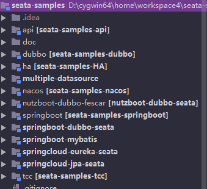
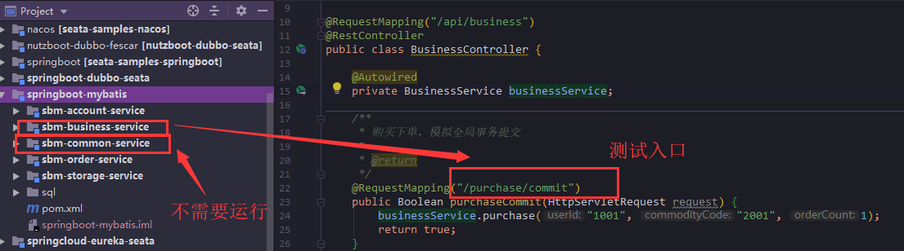
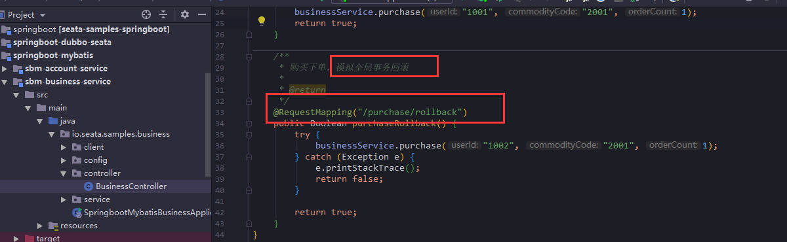
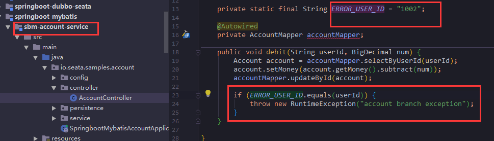
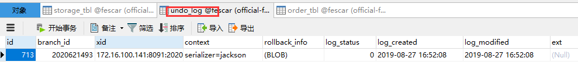
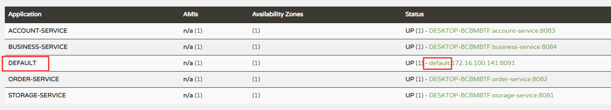
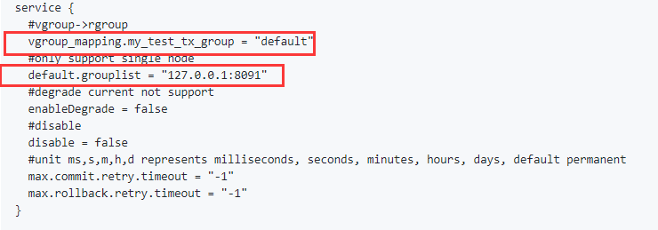

原文连接:https://www.cnblogs.com/sky-chen/p/11419942.html
1. 阿里分布式事务seata入门（采坑）
1.1. 前言
seata是feascar改名而来，这是阿里在19年年初开源出来的分布式事务框架，当初刚出来的时候就想研究下了，一直拖到了现在，目前是0.8.0版本，看版本就知道这还是个比较新的项目，但现在已经有上万个Star了，可见阿里的影响力。但是虽然有阿里背书，该挖坑还得挖，它宣称集成它比较简单，导致的是现在它的文档优点残缺不全，好几个文档标题点进去都没内容，不知道为什么删了，可能是更新比较快，文档跟不上节奏索性删了[手动滑稽]
1.2. 快速开始
1.2.1. 找Demo
- 一般来讲我们要集成这种第三方中间件肯定要去找官方的demo，在官方文档下面，我找到了Seata Samples，看版本目前都是
0.8.0
1.2.2. 目录分析
因为我公司用的SpringCloud那一套，没有用dubbo，所以关于dubbo的我就没运行了
- 看它例子的目录结构，我们也能够知道它大概运行的是啥
这里首先要关注其实是文档，虽然少的可怜，但总算找到一个，可以直接点这里
1.2.3. 运行springboot-mybatis
- 我首先运行的是依赖最少的
springboot-mybatis，只需要开启个服务端，配置好本地数据库，建好表就可以运行了，这个其实没什么好说的，我运行的也很顺利，只需要运行该目录下sql目录下的all_in_one.sql里的所有语句，就会帮你建好数据库插入基本数据，至于服务端的下载可以点击这里下载 - window系统直接双击运行上述服务端解压包里的
seata-server.bat，liunx系统运行seata-server.sh这个，它默认开启8091端口，配置文件在/conf目录下，主要需要修改的是file.conf和refistry.conf，之后会讲到 如下图目录下除了
common不需要运行，其他四个都运行起来，然后调用localhost:8084/api/business/purchase/commit，查看数据库会发现order表添加了数据，storage表扣减了库存，account里扣减了钱
再是测试回滚的情况
调用如上接口
localhost:8084/api/business/purchase/rollback，再看account系统
实际上是对特殊的用户抛了个异常导致的回滚，你可以在抛异常之前打上断点，运行到这时你会发现，去看数据库，库存已经扣了，订单已经添加了，
undo_log表有了记录，这涉及到它的回滚原理了，大概说一句，通过已经运行sql进行记录日志，成功了删掉日志，失败了通过日志来回滚数据，再删掉日志，所以不管怎么样，日志应该是不存在的，若存在说明系统是异常宕机，启动后也应该会继续回滚

1.2.4. 小总结
- 通过快速开始，我们就可以快速的运行成功它的demo了，目前还没遇上坑，但是目前为止我们都用的默认配置，基本没看过它的配置该如何改动，接下去看Seata的配置文件
1.3. Seata配置文件
1.3.1. registry.conf
- 官方文档地址
- 他这里特意提了句
service.vgroup_mapping这个配置，在 Spring Cloud 中默认是${spring.application.name}-fescar-service-group，可以通过指定application.properties的 spring.cloud.alibaba.seata.tx-service-group这个属性覆盖，但是必须要和 file.conf 中的一致，否则会提示
no available server to connect
结果我在运行
springcloud-eureak-seata时真遇到了，这里就体现了它文档的匮乏，我觉得每个例子下面都应该放个文档的注意事项吧，不放每个例子下面，wiki里多写点也好啊，我们不是开发人员，对seata并不熟，特别是对它的配置，主要的两个配置文件registry.conf和file.conf各个系统都存在，但对它的注意事项和描述只有Sample项目里的quick-integration-with-spring-cloud.md文件里提到了一句，对刚接触这个项目的人很不友好- 该文件是用于指定注册中心和配置文件，默认情况下是本地文件存储，所以一开始的mybatis项目我们没感觉需要依赖，然后上面的这句提醒也成功带歪了我，让我没想到是服务端出了问题
该文件可以选择
file 、nacos 、eureka、redis、zk、consul、etcd3、sofa这些注册中心，指定file、nacos 、apollo、zk、consul、etcd3这些配置文件存储，所以提醒一句用eureka作为注册中心的这边的类型记得改
1.3.2. file.conf
- 用于指定TC（事务协调器）的相关属性
- 它还写了
如果使用注册中心也可以将配置添加到配置中心，我又要吐槽了，我用的apollo作为配置中心，请问如何把这个配置文件放apollo里去，同样毫无文档，我得之后自己看源码去研究 这里在demo里重要用到的属性
service.vgroup_mapping.my_test_tx_group，这个key的值就相当于服务端的服务名，在Eureka的效果，相当于如下
如果没用Eureka这种注册中心，就一定需要填写服务端地址，对应
service.default.grouplist的值
至于其他还有n多的属性，抱歉，没有文档，除了能从字面看懂意思的，你不懂就去看源码吧，反正我就不写文档

1.4. SpringCloud集成
1.4.1. 采坑
- 准备运行
springcloud-eureka-seata，第一次我全部运行，报了no available server to connect之后一直再检查配置哪里有对不上？纠结了好久，终于让我反应过来，这是服务端不对 - 在服务端修改了
type = "eureka"还是报错，但我一直在debug，我知道已经不是原来的问题了，最终的解决之道是本地运行，把服务端的file.conf中service.default.grouplist = "172.16.100.141:8091"地址改成内网地址，不要用127.0.0.1，踩了两个坑总算调试成功了，把demo是成功运行起来了，之后的挑战是集成到自己的项目 - 这里又该吐槽了，除了快速启动，没有其他的集成文档，也就是除了引用jar包还需要干什么唯一的参考就是
Sample项目了，这个项目集成的坑明天有空继续踩了
1.5. 总结
- 项目的技术思想是好的，分布式事务的模式也不止一种（虽然它的文档就演示了这么一种），相信它也会不断把阿里分布式事务的优秀思想结合进来，还是值得期待的